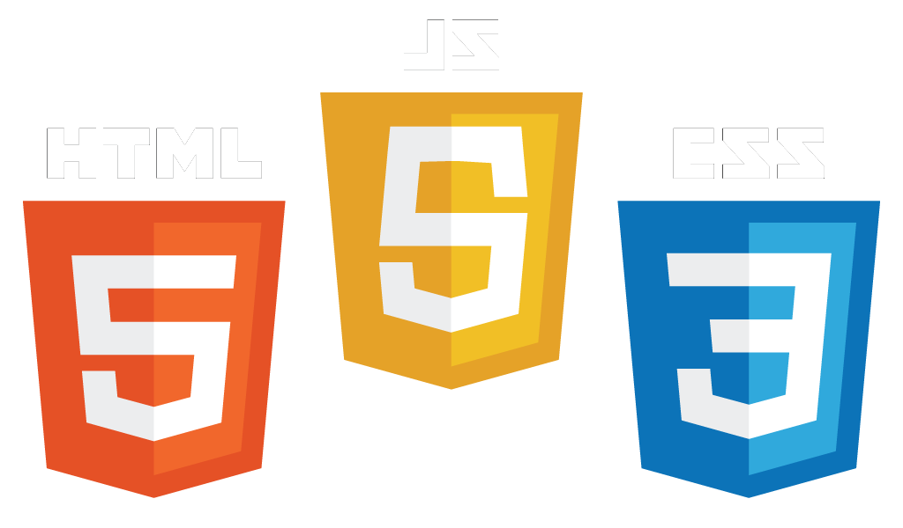
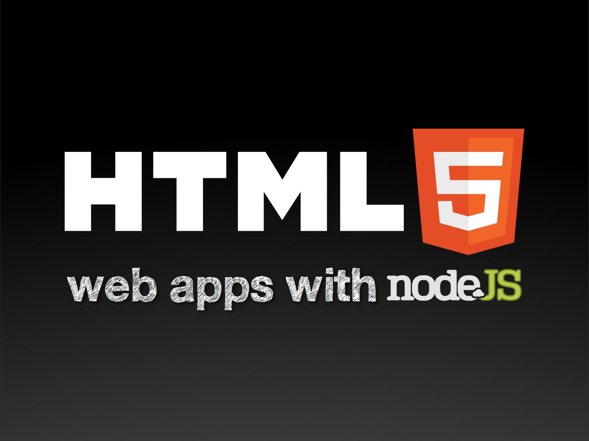

- 

- 

Hi, I'm Jesús Peña
I'm a Telematics & Systems Engineer graduate of Universidad de la Sierra in Moctezuma, Sonora, Mexico.
This is my personal website where you can find information about my work, my recents projects, my resume and personal information.
Portafolio
In this section you can find some projects which I have participated, also some presonal developments.
Personal Information
Address: Villa del bosque #51 Hermosillo, Sonora C.P. 83280
Phone: 662-152-5421
Email: jesusp@edesarrollos.com
My Goals: Develop in a work environment that leads me to new frontiers of knowledge and learning for a better professional growth in systems development area.
Education
Telematics & Systmes Engineer in Universidad de la SierraCisco CCNA 1 Certification
My Resume | Curriculum Vitae